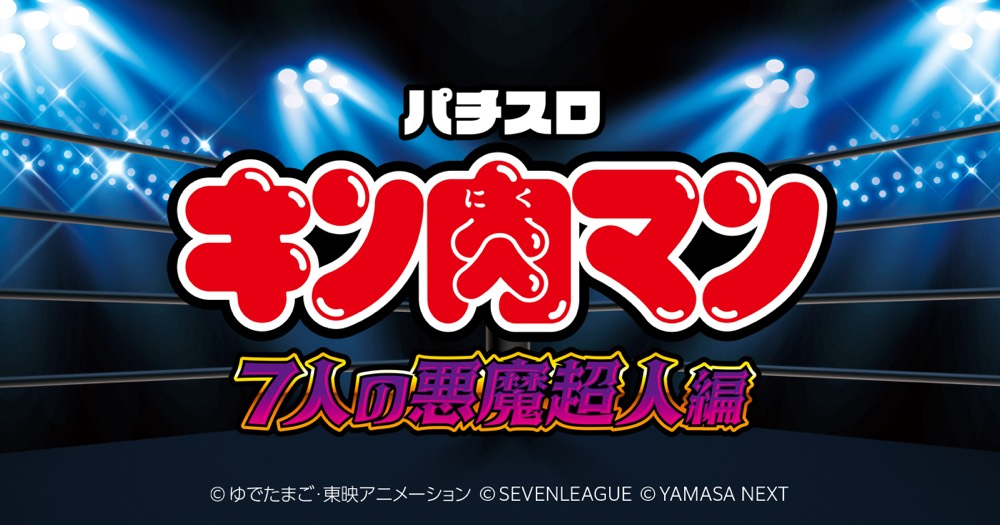

スマスロキン肉マン～7人の悪魔超人編～
正義超人チャレンジでパワーを集め、7セット突破から上位ATへ。
- 導入
- 2023年8月
- メーカー
- セブンリーグ
- 分類
- パチスロ
主要スペック
規定超人パワーからATへ進み、7セット継続で上位ATを目指すスマスロです。設定1のAT初当り約1/404.1、上位AT期待獲得約3500枚の流れを設定別に簡易体験できます。
- 設定1 AT初当り約1/404.1
- 7セット継続で上位AT
- 上位AT期待獲得約3500枚
スマスロキン肉マン～7人の悪魔超人編～の見どころと計算条件
規定超人パワーからATへ進み、7セット継続で上位ATを目指すスマスロです。設定1のAT初当り約1/404.1、上位AT期待獲得約3500枚の流れを設定別に簡易体験できます。
スマスロ キン肉マンを数字で早分かり
正義超人チャレンジから7人の悪魔超人、悪魔将軍バトルまでの流れと、設定ごとの結果差を固定レートで比較できます。
30秒で分かるスマスロ キン肉マン
セット継続のバトルを重ね、7戦突破で大きな上位ATを狙いたい人向けです。
こんな遊び方に向いている
- 継続バトル型ATが好き
- 設定差も結果で比較したい
遊ぶ前に確認したいこと
- 実機に設定3は非搭載
- 上位到達の詳細は比較用モデル
超人パワーを貯めてATへ
通常時は規定超人パワー到達でATを目指します。正義超人チャレンジは超人パワーの獲得ゾーンで、設定1約1/99.8〜設定6約1/91.7です。
サイトでは規定パワーや内部モードを個別再現せず、正義超人チャレンジとAT初当りの公開値を使って段階表示します。
7セット突破から上位AT
通常ATは継続シナリオ管理で、7セット継続すると上位ATへ。上位ATの期待獲得は約3500枚です。
セットごとのシナリオやバッファローマン乱入などは簡易化し、特化ゾーン、7戦突破、悪魔将軍バトルの順に抽選します。
設定1・2・4・5・6で抽選
- 実機に設定3はなく、5段階から均等抽選
- AT初当り・正義超人チャレンジ・機械割は公開値を使用
- 50枚あたり31.0G・46枚貸し・5.2枚交換で固定
- コンプリート到達時は結果画面に表示
平均Gと投資目安の計算
掲載する7人の悪魔超人初当り約1/404.1は設定1基準です。当サイトでは50枚あたり31G、1,000円46枚貸しの固定条件から、設定1基準の平均投資目安を約14,200円と計算します。
シミュレーターでは設定1・2・4・5・6を均等抽選します。設定1・2・4・5・6で公開されている初当り値を個別に使います。公開されていない特化ゾーン・上位到達率の設定差は加えません。 換金は5.2枚交換で固定し、結果とランキングに設定を表示します。
シミュレーション結果の見方
当るまで正義超人チャレンジ・7人の悪魔超人までのゲーム数
設定設定1・2・4・5・6から抽選された今回の設定
上位到達7戦突破と悪魔将軍バトルへの到達
最終収支差枚と5.2枚交換の収支目安
結果は自動で「マイ記録」に保存され、同じ機種を何回試したか、最高収支、勝率をあとから確認できます。
簡易シミュレーターについて
正義超人チャレンジ・7人の悪魔超人・悪魔将軍バトルの流れを固定条件で体験できます。JavaScriptを有効にすると、この位置にシミュレーター、演出、マイ記録、機種別ランキングが表示されます。
結果は娯楽・確率理解のための参考表示です。金銭的価値や交換価値はなく、実際の勝敗や収支を保証しません。18歳未満の方の利用はお控えください。
スマスロ キン肉マンのよくある質問
スマスロ キン肉マンはどんな台？
規定超人パワーからATへ進み、7セット継続で上位ATを目指すスマスロです。 設定1 AT初当り約1/404.1が主な確認ポイントです。
スマスロ キン肉マンの平均投資目安は？
設定1基準の7人の悪魔超人初当り約1/404.1と、50枚あたり31G・46枚貸しの固定条件から、平均14,200円を目安として表示します。実際の設定や遊技状況で結果は変わります。
設定とゲームの流れはどう抽選する？
開始時に設定1・2・4・5・6から1つを均等抽選し、正義超人チャレンジ、7人の悪魔超人、7戦突破、悪魔将軍バトルの順で到達を判定します。設定は最終結果とランキングに表示します。
収支はどう計算する？
1,000円46枚貸し・5.2枚交換の固定条件で投資、換金、収支目安を計算します。実店舗の再プレイ、持ちメダル、端数処理は含みません。